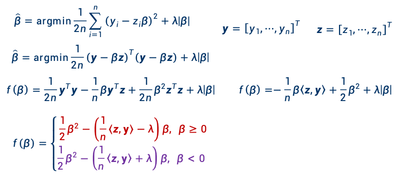

Lesson2 Linear Regression
basic concept of supervised learning
- independent varibles: \(X\) (features)
- state of nature labels pattern classs, class, response dependent varibles: \(Y\) (labels)
- training data: \((x_1, w_1), (x_2, w_2), \cdots, (x_n, w_n)\)
- model: 从x到y的映射关系
- test data: 测试数据
- training error & test error
监督学习的一个过程：
- collect training samples
- define features(step 1)
- features: 特征，当前样本最显著的特点
- 比较早期(神经网络之前)：都是专家定义(手动定义)
- 好的特征：能显著区分不同类别
- 举例：识别人脸，表情/光照/眼睛不能影响识别，因此不能作为特征
- good representation
- low intra-class variability 类内的所有差异能不能无视
- low inter-class similarity 尽可能忽略类间的相似性
- design & train a model(step 2)
- make prediction
"Learning from the experience, and build model to predict the future"
how to design a classifier
- Goal: learn a mapping from input \(X\) to output \(Y\)
- fish length as a feature
- training data: a labeled set of input-output pairs
two features together maybe better than individual features
决策边际(decision boundary)：我感觉挺抽象的，就是说，分类器如何区分不同类别的一个临界点/线吧
complex decision boundary：复杂决策边际，这个边际非常之混乱(训练非常充分)，甚至到了无法表示的地步
- 一般选择是这个曲线test sample的最底线
- 模型复杂度过高，这个test sample的错误率反而上升，即过拟合
Generalization
- generalization on classifier(model): the performance of the classifier on test data(在训练集中不包含的数据)
- 将AI模型与数据库进行区分，这两个的目的是不一样的
- test error
- simple model: underfitting
- complex model: overfitting
"炼丹": 既不能让模型过拟合，也不能让模型欠拟合
classification vs regression
- classification: y is categorical variable
- regression: y is real variable
简而言之，分类是为了"聚类"，回归是为了"求值"。
linear function
- \(f(x) = w^T x\) (等价，不常见)
- \(f(x) = w^T x + b\)
其实也就是X变成\([x_1, x_2 , ... , x_n, 1]\)，然后w变成\([w_1, w_2, ... , w_n, b]\)。
Polynomial Curve Fitting
\(f(x, w) = w_0 + w_1x + ... = \sum_{j=0}^{M} w_jx^j\)
sum-of-square error function(误差平方和方程):
- training data:
- \((x_1, y_1), ...(x_n, y_n)\)
- to learn f which f(x) = y
- criterion function(损失函数):
- \(MSE(w) = \frac{1}{n}\sum_{i=1}^M(y_i - f(x_i, w))^2\)
- 评估机器学习的情况
linear regression model
- \(f(x) = w^Tx\)
- w: unknown parameters or coefficients
- x: feature vector, the outcome of feature extraction
- goal: minimize the mean-square error: \(J_n = \frac{1}{n}\sum(y_i - f(x))^2\)
- 然后就可以写作： \(J_n(w) = (y - X^Tw)^T(y - X^Tw)\)
逻辑上没什么问题，但是数学上有些问题，比如\(XX^T\)得是非奇异的，否则逆矩阵求不出来。
- 如果\(XX^T\)是奇异的，或者接近一个奇异矩阵，那么将导致过拟合
什么情况会出现奇异矩阵或接近奇异矩阵？特征比数据点都要多(高维数据)，或特征之间几乎线性相关。
高斯分布：\(f(x) = \frac{1}{\sqrt{2\pi\sigma^2}} e^{-\frac{(x-\mu)^2}{2\sigma^2}}\)
Maximum Likelihood Estimation 最大似然估计
最大似然估计：比如抛硬币，我们知道硬币是不均匀的（这样正反就不是五五开了），我们计算几正几反的，概率最大的就是我们估计的硬币正反的概率。
Statistical model of regression
- \(y = f(x, w) + \epsilon\)
- \(f(x,w)\) is a deterministic function
- \(\epsilon\) is a random noise, it represents things we can't not capture with 比如符合高斯分布
然后承接上一个的最大似然估计：
concept(?)
- likelihood of predictions:\(L(D, w, \sigma) = \Pi_{i=1}^np(y_i | x_i, w, \sigma)\)
- parameters maximize the likelihood: \(w^* = \arg\max_{w}L(D, w, \sigma)\)
- log-likelihood: \(l(D, w, \sigma) = \log L(D, w, \sigma) = \sum \log(...)\)
意思就是argmax，即要使得总体取得最大值的参数向量。
我们处理这个log-likelihood，可以推导：
这个log就很方便，不改单调性又能方便求导。
Regularization 正则化
ridge regression 岭回归
这里讨论的是如何控制这个参数的大小。
-
权重衰减(weight decay):
如何理解权重衰减，就是直接添加了L2惩罚项，使得计算需要考虑权重 + 局部平滑(local smoothness): + 假设相邻的系数应该具有相似的值 + 通过添加平滑约束来控制系数变化幅度
weight decay(的一些推导)
相当于添加了一个\(\lambda w^Tw\)，依旧是计算梯度：
因此此时取到最小值的\(w^*\)就是\((XX^T + \lambda I)^{-1}Xy\)
Bayesian Linear Regression
后验\(∝\)似然\(×\)先验
依旧仙家对话。
反正概括一下就是恰好对应了岭回归的这一个L2惩罚项，也是打下了坚实的概率论基础.jpg。
A more general regularizer
岭回归是L2惩罚项(q为2)，LASSO是L1惩罚项(q为1)。
LASSO
Least Absolute Selection and Shrinkage Operator
上文提到的惩罚项是L1，所以LASSO约束其实是一个菱形(参考岭回归是一个圆形)
LASSO有稀疏解，其实是所谓的q越小越有，而q=2没有了(因为是球面，光滑？)。
然后就是求解：
首先标准化：

一个展开与化简的过程，随后引入一个内积，并开始对于\(\beta\)的分情况讨论。
依旧求导。
最后就能够得到著名的软阈值函数
，其实就是LASSO的闭式解：
bias-variance decomposition
The Supervised Learning Problem
- Loss: \(L(y, f(x))\)
- Expected Loss: \(E(L) = \int\int L(y, f(x))p(x, y)dxdy\)
- Squared Loss: \(L(y, f(x)) = (y - f(x))^2\)
- Expected Squared Loss: \(EPE(f) = \int\int (y - f(x))^2p(x, y)dxdy\)
依旧大模型嘴替
前一项叫variance，后一项叫bias（其实后一项是(bias)^2）。
- variance: 模型配置一样的情况下，数据集可能不一样。我当前配置下，不同数据集有多少差异
- bias:不同数据集，其期望值与真实数据的差异
- noise:真实分布下，同一个x可能对应不同的y，这个方差就是bias
bias在high的时候可以看到离中心（即期望的值）很远，variance在high的时候可以看到数据点很散。当然都是越低越好，但是很多情况只能保一个。
- 过拟合：bias低（至少是在训练集上），variance高
- 欠拟合：bias高，variance低
cross-validation 交叉验证
测试集不参与模型训练，只用于评估模型的好坏。
validation取多少也是一个炼丹型的问题。
- K-fold cross-validation
- 将数据集分成K份，循环地，每次取其中一份作为validation，其余作为training
- leave-one-out cross-validation
- 总之就是有一份一直不作为validation，其余作为training